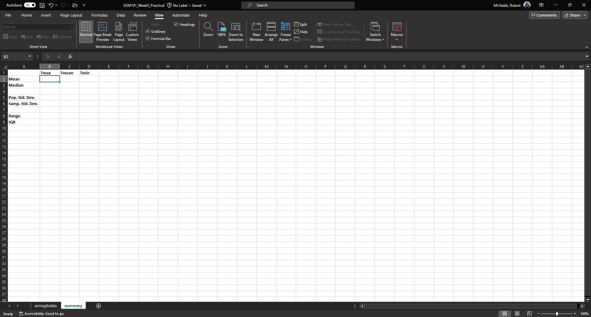
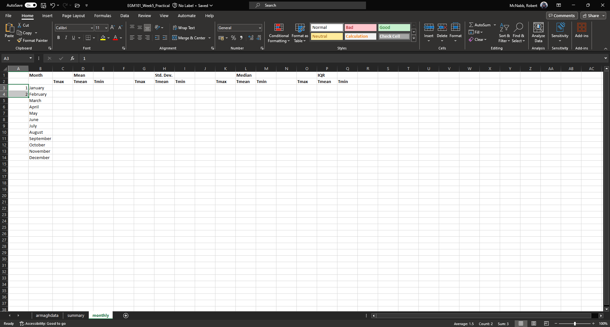
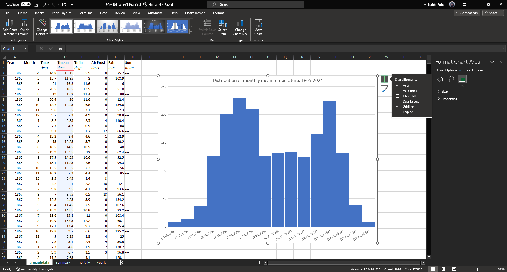

computation, summary statistics, and graphing in excel¶
The purpose of this practical is to introduce you to Microsoft Excel and complement the theoretical material presented in the lectures, discussions, and reading material. The experience gained in analyzing and presenting data should also help you to develop your confidence in using and presenting numerical results.
By the end of this practical, you should:
be able to import and format data in a spreadsheet
perform calculations with both manually-entered and built-in functions
create and format different types of graphs
interpret both graphs and numeric values
getting started¶
If you have not already, you should download the Week 5 Data file to your OneDrive folder.
Note
I strongly recommend that you create a dedicated folder for your EGM101 material on your OneDrive. I also recommend that you organize it in a way that will help you find things easily.
The folder structure outlined below is only a recommendation (you should use something that works best for you),
but an organized folder structure with clearly-labeled, understandable file names (for example,
EGM101_Week5_Data.xlsx instead of Data (1).xlsx) should help make life just a bit easier.
OneDrive
└─ EGM101
├─ Practicals
├─ Week 5
├─ Week 6
├─ Week 7
└─ Week 8
├─ Reading
└─ Assignment
├─ Data
└─ Report
spreadsheet basics¶
If you haven’t already, open Excel using either the Start Menu (Start > Excel) or the Desktop or Taskbar icons (if they exist).
When it opens, you should see the following (note that the layout and theme may differ):
{kind=link}
A spreadsheet is a table of different cells, organized into rows and columns. In Excel, the columns are
labelled alphabetically (A, B, C, … Z, AA, AB, etc.), and the rows are labeled numerically (1, 2, 3, … etc.). Cells
are identified using their column and row - in the example above, the green outline is in cell A1, or the first column
and first row.
At the bottom of the window, you can also see a tab labeled “Sheet1”, indicating that this is the first sheet (table) in the spreadsheet. Excel spreadsheets can contain multiple sheets - to add additional sheets, use the “+” symbol next to the sheet tabs. You can also switch between sheets using the tabs.
importing data¶
For this week’s practical, we will be working with meteorological observations from the Armagh Observatory, provided by the Met Office.
Recall that a variable is any sort of characteristic of the members of a population - in essence, it’s the thing that we’re meaasuring and analyzing. In this practical, we’re primarily going to be working with three different temperature variables:
Tmax, the monthly maximum temperature recorded at the Armagh Observatory;Tmean, the monthly mean temperature recorded at the Armagh Observatory; andTmin, the monthly minimum temperature recorded at the Armagh Observatory.
The meteorological data provided by the Met Office date back to 1853, though the temperature records provided “only” go back to 1865. Before we get started, though, we need to Import the data into Excel.
To do this, you can press Ctrl and O at the same time (Ctrl + O), or by selecting Open from the
File tab in the upper-left corner of the window.
Browse to where you have saved armaghdata.txt, and select the file. You may need to change from viewing
Excel files to All files in order to see it in the panel.
When you open the file, you should see the following window:

These data are Fixed Width, meaning that columns are separated by a fixed number of spaces. You can also see
that the file has a number of extra rows at the beginning - we don’t actually want to import these, so change
Start import at row: to row 6. Once you’ve done this, click Next to bring up Step 2 of 3:

Here, we want to make sure that the column breaks (the vertical lines) are spaced where we have different columns.
But, we can also use this to separate out non-numeric characters from each cell, which will mean we don’t have to go
through the spreadsheet and do this by hand later on.
If you scroll to the bottom of the window, you should see something like this:

You can add separators around these characters by clicking on them:

Make sure that you add separators after each numeric entry - the final view should look something like this:

Click Next to bring up the following window:

Here, we can tell Excel which columns to import, and which columns to skip. First, select the column by clicking on
the header (first cell) for each column.
We want to make sure that Excel doesn’t import any of the columns which won’t have data - for each of these columns, you’ll want to select Do not import column (skip). When you select this, the column header should change from “General” to “Skip Column” - do this for each of the small columns that you created, plus the final column. It should look something like the following:

Now click Finish. You should see something like the following:

Note
If you see other columns, it likely means that you had additional column breaks in step 2 of the Import dialogue above, or you did not tell Excel to skip importing some columns in step 3 above.
Don’t panic. You can delete a column following the same procedure as outlined for rows below - just be sure to highlight the column that you want to remove, rather than the row.
Now that we’ve imported the data, we need to save the spreadsheet as an Excel Workbook. To do this, click on the File tab, and select Save As.
Re-name the file as EGM101_Week5_Practical, make sure to change the file type from “Text (Tab delimited)
(*.txt)” to “Excel Workbook (*.xlsx)”, and save it to your EGM101 folder on your OneDrive:

Warning
Be sure to double-check that you are saving this to your OneDrive folder, not the local disk. If you save the file to the local disk, it will not be backed up, and you won’t be able to access it unless you are sitting at this exact same computer.
Once you’ve saved the file, you should see that the warning has gone away.
formatting text¶
Now that we’ve successfully imported the data, we want to edit the sheet to make it easier to read. We can start with the column headers - let’s rename these to be something that’s a bit easier to understand:
{kind=link}
Here, I’ve changed yyyy to Year, mm to Month, and af to Air Frost.
Like in Word or other programs, we can also change the font to highlight text - go ahead and make the first row of
text Bold by highlighting the cells and changing the text to bold (either using Ctrl + B on the keyboard,
or by clicking on the “B” under the font name on the Home tab).
Change the second row of text (the units) to italics in the same way: first highlight the cells, then press
Ctrl + I on the keyboard, or click on the “I” under the font name on the Home tab:

freezing the view¶
The next thing we can do to make the spreadsheet easier to work with is freeze the top row(s) of the spreadsheet so that as we scroll down the sheet, the top two rows are always in view. To do this, click on cell A3. Then, under the View tab, click on Freeze Panes and select Freeze Panes (the first option). This will freeze the first two rows:

You should see that a line appears between the second and third rows. Now, when you scroll, the column headers will
always be visible - this way, you don’t have to scroll back up to see what data each column represents:

Note
Freeze Panes will set the “freeze line” above and to the left of the highlighted cell. So, if you also want to freeze the first column, you can click on cell B3 instead. This will freeze the first two rows, as well as the first column.
Question
Look at the values in each column of the table. What type of data do each of these variables represent?
adding/removing columns and rows¶
The next thing that we’ll cover is adding and removing columns and rows to the spreadsheet. You should notice that,
while the total monthly rain (Rain, column F) has data starting in January 1853, the other rows (minimum/maximum
Temperature, days of Air Frost, and average hours of Sun) don’t start until April 1865 (row 150).
Because we are primarily interested in the temperature records here, we can remove rows where we have no data. To do this, first scroll back to the top of the spreadsheet. To delete an entire row, we first have to highlight the row in the table. To do this, click the row number in row 3 (left-most part of the window):
{kind=link}
You should see that all of row 3 is now highlighted. To delete an individual row, you can right-click on the row
number and select Delete. Rather than doing this individually, though, we can select multiple rows using the
Shift key. With row 3 highlighted, scroll down in the table until you see row 149. Hold down the Shift key and
click on the row number for row 149. You should see that rows 3 - 149 are now highlighted:

Right-click on the row numbers along the left-most part of the window, and select Delete. You should see that
the table shifts upwards:

Click on any cell to remove the highlighting. The next thing we’ll do is add a column to the table, to represent
the monthly mean temperature. We’ll add this column in between the maximum and minimum columns of the table. First,
click on the column name for column D to highlight the column:

Next, right-click on the column name and select Insert - this will add a new column between column C and the
(old) column D (now column E):
{kind=link}
In the first row of this column, add a name (Tmean), and in the second row, add the units (degC) - you
should see that the formatting you added earlier is still there in the new column:
{kind=link}
calculating values using formulas¶
One of the biggest advantages to using programs like Excel is that we can use the computer to do calculations for us, rather than needing to do everything by hand. There are a number of different ways we can have Excel calculate new values for us - as a first example, we’ll see how we can use it to calculate the monthly mean air temperature according to the following formula:
that is, the monthly mean temperature is the arithmetic mean of the monthly maximum and minimum temperature.
simple formulas and referencing cells¶
To start, click on cell D3, representing the mean monthly temperature for April 1865. We could type in the value of this cell using the actual data values for the maximum and minimum temperatures:
However, there are a number of drawbacks to this. For one, we would have to manually enter each value, which (a) is time-consuming, (b) makes it significantly more difficult to change the values later on, (c) dramatically increases the chances of making an error (which would require us to change the values later on).
Instead, we can use cell references to input the formula. Click on cell D3, and type in the following:
= (C3 + E3) / 2
Press Enter - you should see the following:

There are a few things to note here:
The formula begins with “=” - this is always the case in excel, whether entering a simple formula or using a built-in function.
To refer to a cell, we use the column label (e.g., C), followed by the row label (e.g., 3).
In the spreadsheet, we see the output of the formula (10.15), but in the formula bar, we see the formula entered.
It’s usually a good idea to use brackets in your formula, to ensure the correct order of operations (and to make the formula more readable).
Rather than re-typing this formula in each row of column D, we can either copy + paste the formula, or by using the fill handle. To use the fill handle, make sure that you have highlighted cell D3 in the sheet. Next, hover your cursor over the lower right-hand corner of the green outline - when your cursor changes to a “+” symbol, left-click the mouse, then drag the cursor toward the bottom of the screen. You should see the green outline extend. Keep going until you’ve highlighted all the way to the bottom of the table (row 1891).
When you release the mouse button, you should see that each row of column D is now filled with a value:
{kind=link}
To check, click on cell D1891 - you should see the following in the formula bar:
= (C1891 + E1891) / 2
We’ll see more examples of filling cells in this way later on. For now, scroll back up to the top of the table.
built-in functions¶
Our next task will be to calculate descriptive statistics such as the mean, median, standard deviation, range, and
interquartile range for each of our temperature variables (Tmax, Tmean, and Tmin).
To start, create a small table to the right of where we have our data:
{kind=link}
It doesn’t need to be in the exact same location as shown above, but you should include columns for Tmax,
Tmean, and Tmin, as well as rows for the mean, median, population and sample standard deviations, range, and
inter-quartile range, as shown above.
In the upper left cell of this table (K5 in the example above), insert the following formula:
= AVERAGE(C3:C1891)
This uses the built-in AVERAGE
function to calculate the arithmetic mean of the cells used as input. Here, we’re telling Excel to use the values in
all of the cells starting from C3 and ending at C1891. Note that the : in between C3 and C1891 is what Excel uses
to denote a range of cells - this way, we don’t have to explicitly type in C3, C4, C5, and so on.
When you press enter, you should see the following:
As before, you should see that the cell displays the calculated value, while the formula bar displays the formula
entered.
Rather than typing the formula again to calculate the mean of Tmean and Tmin, we can instead use flash fill
like we did to fill out the Tmean column. To do this, click on the lower right corner of the green outline in cell
K3, then drag the cursor over to cell M3:
{kind=link}
Next, we need to fill out the rest of the table. First, use the
MEDIAN
function to calculate the median value of Tmax by inserting the following formula into cell K6:
= MEDIAN(C3:C1891)
Next, use flash fill to copy this formula to Tmean and Tmin, as you did above for the arithmetic mean.
For the standard deviation, Excel has two functions: STDEV.P and STDEV.S, for the population and sample standard deviation, respectively. In cell K8, enter the following formula to calculate the population standard deviation:
= STDEV.P(C3:C1891)
And in cell K9, enter the following to calculate the sample standard deviation:
= STDEV.S(C3:C1891)
Again, use flash fill to fill out each row as you go along.
Excel doesn’t have dedicated functions for the range and inter-quartile range, but we can still calculate them using functions that Excel does have. Remember that the range is just the difference between the maxmimum and minimum values of a variable:
We use the same equation here, using the MAX and MIN functions:
= MAX(C3:C1891) - MIN(C3:C1891)
Again, use flash fill to fill out this row.
Finally, remember that the inter-quartile range is the difference between the third quartile, \(Q_3\), and the first quartile, \(Q_1\):
Excel has two functions to calculate quartiles: QUARTILE.INC,
for calculating the quartile inclusive of the endpoints, and
QUARTILE.EXC,
for calculating the quartile exclusive of the endpoints. We’ll use QUARTILE.INC here.
Enter the following formula into cell K12:
= QUARTILE.INC(C3:C1891, 3) - QUARTILE.INC(C3:C1891, 1)
Note that QUARTILE.INC takes two arguments: the first is the range of values to calculate the quartile over,
and the second is which quartile to calculate. So, QUARTILE.INC(C3:C1891, 3) calculates \(Q_3\) of the values
in cells C3 through C1891, while QUARTILE.INC(C3:C1891, 1) calculates \(Q_1\).
Once again, use flash fill to fill out the table. It should look something like this:

formatting cells¶
The final step we’ll do in this part of the practical is format the cells, so that they show an appropriate number of significant figures. In the example above, you can see that the mean value is shown with 5 decimal places, despite the fact that the original data only has a single decimal place.
Highlight all of the cells in this part of the table (columns K - M, rows 5 - 12), right-click, and select Format Cells to bring up the following window:

Make sure that the Number category is selected, then change the number of decimal places to 2. Click OK to
close the window. You should see that the cells in the table are now formatted to only show the first two decimal
places:
{kind=link}
Here, you should notice something about the standard deviations: to two decimal places, the population and
sample standard deviations are the same. Remember that the difference between the population and sample standard
deviation is that the denominator of the population standard deviation is \(n\), while for the sample standard
deviation it is \(n-1\).
For low values of \(n\), this can make a big difference; as \(n\) gets very large, though, the difference is far less important. Here, where \(n\approx 2000\), the difference only shows up in the third decimal place.
Question
Which temperature variable (
Tmax,Tmean, orTmin) has the largest range? What does this tell you about extreme values?Look at the standard deviation values for each temperature variable. Which variable has more variation?
monthly averages¶
conditional formulas and references¶
Next up, we will use referencing to perform slightly more complicated calculations - specifically, we will calculate monthly- and annually-averaged values of our temperature variables, starting with monthly averages. For this part of the practical, we’re going to calculate the mean, standard deviation, median, and inter-quartile range for each of our temperature variables.
Warning
If your sheet is named something other than armaghdata, you should change this now to avoid pain and confusion
later.
To do this, right-click on the tab in the bottom left corner of the workbook, then select Rename. Type
in the name armaghdata, then press Enter.
To start, we will add a sheet to the workbook. At the bottom left of the window, click on the + icon next to
the armaghdata tab. This will add a new sheet to the workbook:

Rather than the helpfully non-descriptive name Sheet1, let’s name this sheet monthly to indicate that this
is the monthly data. To do this, right-click on the Sheet1 tab, and select Rename. Type in the new name and
press Enter.
Next, we can start adding row and column headers to this table. In the example below, I’ve grouped each parameter into a set of three columns, with spaces in between to help make it more readable. Once you’ve set up the column headers as shown below, type the names of months in cells B3 - B14, then enter a “1” in cell A3, and a “2” in cell A4:
{kind=link}
Rather than typing in each number individually, we can again use flash fill to automatically fill cells
based on some pattern.
Highlight cells A3 and A4, then click on the green square in the lower right corner of the highlighted outline. While holding down the mouse button, drag the outline so that it includes all of cells A3-A14. Excel will recognize the pattern from the first two cells (1, 2, …) and fill the remaining cells by continuing the pattern:

Now, we’re ready to start inputting formulas into the table. In cell C3, enter the following formula:
= AVERAGEIF(armaghdata!$B$3:$B$1891, $A3, armaghdata!C$3:C$1891)
This formula uses the AVERAGEIF
function to average cells in some range, based on some criteria. Here, we’re telling the function to average all of
the values in cells C3:C1891 of the armaghdata sheet, but only where the value in cells B3:B1891
of the armaghdata sheet is equal to the value in cell A3 - in other words, we’re only taking the average of the
temperatures from rows where Month is equal to 1.
The first thing to notice with this formula is that we can reference other sheets by using the label of the sheet
(armaghdata), followed by !, and the cell(s) that we want to reference in the other sheet.
The second thing to notice is the use of the $ in the formula above. Earlier, when we used this formula:
= (C3 + E3) / 2
And used flash fill to copy the formula to the other rows in column D, the row number changed - that is, the formula in row 1891 was:
= (C1891 + E1891) / 2
This is because Excel treats C3 (or E3, or C1891) as a relative reference. When we typed this formula into cell D3, Excel interpreted C3 as “the cell in the same row, one column to the left”, and E3 as “the cell in the same row, one column to the right.” When you copy + paste a formula with relative references into another cell, the references change.
The $ tells Excel not to do this - it should instead keep the column or row constant, depending on where the $
is. With only one $, we say this is a mixed reference - if it’s before the column ($A3), then Excel will
hold the column constant, but adjust the row. If it’s before the row (C$3:C$1891), Excel will hold the row constant,
and adjust the column.
If we have two $ in the reference (e.g., $B$3), Excel won’t adjust the column or row - this is an absolute
reference. To see this in practice, use flash fill to copy the formula to the other rows of column C (C3:C14) - you
should see that the second reference changes from A3 in row 3, to A4 in row 4, and so on:
{kind=link}
The other references don’t change, though, because the rows are held fixed. Now, with the entire column selected,
use flash fill to fill out the other two columns in this part of the table. You should see that the column in the
third reference changes from column C to column E, depending on which column of this sheet we’re looking at.
We have now calculated the monthly averages for each of our temperature variables. The last thing to do before moving on is to change the formatting so that only 2 decimal places are displayed. You can do this following the same procedure that we used earlier (right-click, Format Cells).
more conditional formulas¶
standard deviation¶
Next, we want to calculate the standard deviation of temperatures for each month. Unfortunately, there is no
STDEV.IF function like there is for AVERAGE. Instead, we have to use
IF
along with STDEV.S. In cell G3, enter the following formula:
= STDEV.S(IF(armaghdata!$B$3:$B$1891 = $A3, armaghdata!C$3:C$1891))
Here, we have nested the IF function inside of the STDEV.S function, meaning that STDEV.S will perform
a calculation on whatever the output of the IF function is. Just like we saw with AVERAGEIF, IF will
return whatever value is in cells C3 to C1891 of the armaghdata sheet, as long as the value in column B of the
same row is equal to the value in A3 of this sheet.
Because we have fixed the column, but not the row, when you use flash fill to fill in the rest of the cells in
the standard deviation part of the table, the formula should adjust based on the row, just as it did for AVERAGEIF.
Go ahead and do this now, then be sure to format the cells to show only the first two decimal places.
median¶
To calculate the monthly median values, we will use the MEDIAN function nested with the IF function, exactly
as we did for the standard deviation. Enter the following formula into cell K3:
= MEDIAN(IF(armaghdata!$B$3:$B$1891 = $A3, armaghdata!C$3:C$1891))
Once you have entered the formula into cell K3, use flash fill to fill the remaining values in this part of the table, then format the cells to show only the first two decimal places.
inter-quartile range¶
To calculate the monthly interquartile range values, we will use the QUARTILE.INC function nested with the IF
function. This formula is slightly more complicated, if only because it requires two nested functions. Enter the
following formula into cell O3 (remembering that you can copy and paste):
= QUARTILE.INC(IF(armaghdata!$B$3:$B$1891 = $A3, armaghdata!C$3:C$1891), 3) - QUARTILE.INC(IF(armaghdata!$B$3:$B$1891 = $A3, armaghdata!C$3:C$1891), 1)
Once you have entered the formula into cell O3, use flash fill to fill the remaining values in this part of the table, then format the cells to show only the first two decimal places.
Once you have finished filling in the various formulas and formatting the cells, your monthly sheet should look
something like this:

Question
Compare the mean and median temperature values for each month. What does this tell you about the distribution of temperature values?
annual averages¶
Next, we’ll calculate annual averages for our temperature variables. The procedure for calculating annual values works much the same as for the monthly data. First, we create a new sheet, then add data and formulas to the new sheet.
To start, add a new sheet by clicking the “+” next to the monthly tab, then re-name the new sheet yearly.
Next, add the column headers to the new sheet. For this practical, we’re only going to calculate annual means and medians, though you can use the same procedure we used in the previous section to calculate standard deviations, interquartile ranges, and so on.
First, though, we have to input the years that we want to average over into the table. In cell A3, type “1866”, and in cell A4, type “1867”, then use flash fill to fill the remaining years up until 2021.
Note
For now, we’re only going to include years where we have 12 months of data - because the 1865 data doesn’t start until April, and the 2022 data ends in August, we’ll exclude those years for this part of the analysis.
In cell B3, now, enter the following formula:
= AVERAGEIF(armaghdata!$A$3:$A$1891, $A3, armaghdata!C$3:C$1891)
You’ll note that this is almost the exact same formula as we used for the monthly averages, with the change that
we’re averaging based on the year (column A in the armaghdata sheet) instead of the month (column B).
Once you have entered the formula, use flash fill to fill the remaining cells in this part of the table (columns B to D, rows 3 to 158). Next, be sure to format the cells to only show the first two decimal places, as before.
We can now do the same thing for the median values - in cell F3, enter the following formula:
= MEDIAN(IF(armaghdata!$A$3:$A$1891 = $A3, armaghdata!C$3:C$1891))
Next, use flash fill to fill the remaining part of this table (columns F to H, rows 3 to 158), then format the cells to only show the first two decimal places. Your table should look something like this:

Note
If it’s been a while since you’ve saved your workbook, you should do so now (File > Save, or CTRL + S
on the keyboard.
creating charts¶
In addition to performing calclulations, we can also create charts and figures using Excel. In this part of the practical, we will see how we can create histograms, bar charts, and line charts.
histograms¶
We will start by looking at the distribution of monthly-averaged values in the form of a histogram. On the
armaghdata sheet, highlight column D by clicking on the column label. To add a chart, click on the Insert
tab:

In the Charts section (red box), click on Insert statistic chart (white box), and select Histogram
from the menu that pops up. You should see that you have a histogram added to the table:
{kind=link}
First, we want to re-size the chart to make it a bit bigger - to do this, click on the chart, then click and drag
on any of the corners to expand it:
{kind=link}
Before we are finished with our histogram, there are a few things that we need to do. First, remember that a
chart should have a title or a caption that explains the chart. Click on “Chart Title”, and change the title from
“Chart Title” to “Distribution of monthly mean temperatures, 1865-2022”.
Next, we need to add labels for the axes. When you click on the chart, you should notice icons appear along the right edge. Click on the “+” button to open a menu for adding chart elements:
{kind=link}
To add axis labels, click the checkbox next to Axis titles - you should see two labels appear along the vertical
and horizontal axes. Change these to be “Frequency” or “Count” on the vertical axis, and “Temperature (°C)” on the
horizontal axis:
{kind=link}
Finally, we can increase the font size on the labels, to make them easier to read. To do this, highlight the text
and increase the font size using the small window that pops up. Alternatively, you can select the text box, then change
the font size using the Home menu. Increase the axis label font size to 14, the chart title font size to 20, and
the vertical axis tick labels to size 12:

Question
What kind of frequency distribution does
Tmaxhave? Why would you expect this to be the case?What is/are the modal value(s) of
Tmax?
If you like, you can also change the color and style of the bars. If not, go ahead and move on to the next section.
Note
For more flexibility with histograms, you can use the FREQUENCY function to create a table of frequencies,
then display the frequencies as a bar chart. We will not cover this here, but if you are interested in going a bit
further, there are some excellent tutorials online such as
this one or
this one.
bar charts¶
The steps for creating a bar chart are more or less the same as for creating a histogram, at least at the start. First,
we’ll select the data that we want to plot. In the monthly data tab, highlight cells D3 to D14 by clicking on cell
D3, and dragging the mouse cursor down to cell D14:

Under the Insert tab, in the Charts section (red box), click on Insert Column or Bar Chart (white box),
and select Clustered Column. You should see the following inserted into the table:

Go ahead and move the chart so that it’s not covering data, and re-size it like you did with the histogram. The
first thing we’ll need to do is change the horizontal axis labels to use the month names, instead of numbers. To do
this, first click on the Chart filters button along the right-hand side of the chart:

At the bottom of this menu, click Select Data… to bring up the following window:
{kind=link}
We’ll keep the data as-is, but click on Edit under Horizontal (Category) Axis Labels. Now, select cells B3
to B14 to use the month names as axis labels:
{kind=link}
You should see that the labels in the chart have changed to “January, February, …” from “1, 2, …”. Click OK
in both of the windows that have been opened to return to the Workbook. The next thing we want to add are error bars,
to show the variation of temperatures within each month. To do this, click on the Chart Elements button again, and
select Error bars.
This turns on the error bars, but we’re interested in showing the standard deviation of the monthly observations, rather than the default. From the Chart Elements menu, click on the arrow next to Error bars, and select More options…. This should bring up the Format Error Bars panel on the right-hand side of the screen:

Click on Error bar options (red box). At the bottom of this panel, under Error Amount, click the button next
to Custom, then click on Specify Value:
{kind=link}
Here, you can select the data ranges to use, or use a set value (currently set to ±1). Under Positive Error Value,
select cells H3 to H14 (representing the monthly standard deviation of Tmean). Do the same for the
Negative Error Value:

You can also change the formatting of the error bars to make them thicker and more visisble
(Width under Fill & Line (red box)):

Next, we’ll see how we can format the tick labels on the axis. Click on the vertical tick labels:

Under the Format Axis panel on the right-hand side of the window, click on Axis Options (red box),
followed by Number, then change the number of decimal places to “0”.
Note that under Axis Options, you can also change the axis bounds, as well as the spacing between the ticks. For now, the default values are fine.
To finish up the chart, change the chart title to “Average monthly temperature, 1865-2022”, add axis labels, and increase the font sizes like we did for the histogram:

Question
What month has the highest average temperature? What about the lowest?
What month(s) have the largest spread in temperatures? What might this tell you about the weather in those months?
{kind=link}
line charts¶
For the final example of creating a chart using Excel, we’ll create a line chart using the median annual temperature.
Click on the yearly tab, then select all of the data in columns F through H and rows 2 through 158:

Under the Insert tab, in the Charts section (red box above), click on Insert Line or Area Chart (white
box above), and select Line. This will insert a line chart into the workbook:

As before, you can move and re-size the chart object. At the moment, the x-axis data is just the row number,
starting counting from 1. We would like to plot the median temperature as a function of year, so we need to add the
correct labels to the chart.
As you did for the bar chart, click on the Chart Filters button along the right side of the chart, then click on Select Data to bring up the Select Data Source dialogue. Under Horizontal (Category) Axis Labels, click on Edit to select the cells containing the axis labels, then select cells A3 to A158 (alternatively, type the range into the formula bar in the Axis Labels window):

Click OK - you should see that the labels have changed from 1, 7, ..., 151 to 1866, 1869, ..., 2019.
This is quite crowded, and we can change the labels so that only every 10th value is shown. To do this, click on the
horizontal axis labels to highlight them. On the Format Axis panel, click on Axis Options (red box below).
Under Tick Marks, change the Interval between marks to be 10, and the Major type to be Cross - this
places a tick on the horizontal axis every 10 data points, which can help with reading the graph. Under Labels,
select Specify interval unit, and type 10 in the box - you should see that the labels change from
1866, 1869, ..., 2019 to 1866, 1876, ..., 2016:
{kind=link}
To finish up the graph, add a chart title and axis titles, and remove the decimal points from the vertical axis
labels. Finally, increase the font size of each of the chart elements. Your final chart should look something like this:
{kind=link}
At this point, you have finished the exercises in the practical. Have a look back at the questions in the text,
and see how many of them you can answer. Keep in mind that some of these questions will most likely be part of the
assessment for this part of the module - it would be a good idea to write down your thoughts/answers now so that you
have an easier time answering the questions on the assessment.
If you would like extra practice with Excel, have a look at the “next steps” section below for some suggestions on additional exercises you could try.
next steps¶
Add Rain to the analysis above, but instead of calculating the annual mean, calculate the annual total (sum).
what month(s) tend to be the rainiest in Armagh?
looking at the annual plot, has the total rainfall been consistent over time? can you pick out years where the rainfall has been much heavier (or lower) than others? How does this compare with the temperature?
Instead of looking at the annually-averaged values of temperature, we can instead look at the difference between each annually-averaged value and a long-term average - something called an anomaly. To do this, you subtract the long-term average value from each value, then plot the result. Can you create a graph that looks like the one below?
Looking at the graph below, what do you notice about the temperature anomaly over time?
{kind=link}